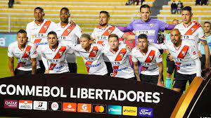

Always Ready. Sus Tres Títulos (1951, 1957, 2020)

¡Always Campeón! Inevitablemente se me vienen a la mente Mario Dimeglio y Griseldo Cobo, mis dos ídolos de infancia. La última vez que el albirrojo salió campeón nacional fue en 1957, yo apenas tenía cuatro años, no lo vi, no lo viví. Celebré el torneo paceño de 1968 y en los ochenta me hice dirigente…
Pero, ¿qué más da?. La banda sangre vuelve a estar donde debió estar siempre. Ha levantado su tercera copa gracias a dos dirigentes visionarios: Fernando y Andrés Costa que se comprometieron en 2015 con un club hecho pedazos, en la B de La Paz. De allí, de la sima, lo llevaron a la cima. Campeones de la B (2015), campeones de la A (2018), Campeones del Nacional B (2018), Campeones Nacionales (2020)… y contando.
Mérito a una historia, certeza de un gran presente, proyección de futuro. Eduardo Villegas y el Turco Asad le han dado al equipo un ritmo que se apoya en la rotación, en la posibilidad de contar con jugadores todo terreno, con sentido de equipo y un toque de calidad. Piensen en Enoumbá que igual es marcador central que mediocampista de enganche, o en Saucedo que corre toda la línea horizontal del medio terreno. Reparen en los lujos de Galindo y sus toques precisos de 10 clásico, o en Sanguinetti que igual es media punta que goleador, tal como lo fue Dimeglio el 10 legendario del CAR, reencarnado en este hombre que lleva la 11 con tanta gallardía. Denle una mirada a la dupla depredadora del “pit bull” Ovejero y Britos, y si hace falta percátense del olfato de Ramallo. Deténganse atrás en Lampe, a cambio de Cobo. ¡Qué arquero! Lampe está en el equipo correcto en el momento correcto, ojalá por mucho tiempo más. Pero quizás el liderazgo del equipo lo tenga Cabrera, qué rompehuesos ni que rompehuesos, defensor de raza y cabeceador oportuno para los goles imprescindibles. Y Mamani y Torrico, y Árabe y Adrián…
Always pierde por penales ante Palmaflor y le dice adiós al título
Este miércoles Always Ready perdió en la tanda de penales por 4-5 en un final electrizante ante Atlético Palmaflor que pulverizó el sueño ‘millonario’ de pelear por el título. El crédito Quillacolleño juagará el domingo contra The Strongest o Royal Pari por el primer round de semifinales.
El encuentro en su tiempo regular acabó con triunfo de Palmaflor por dos tantos contra uno, idéntico marcador al del cotejo de ida en El Alto, por eso definieron desde los 12 pasos.
En los penales, Always acertó cuatro y erró uno, el juvenil Josué Mamani mandó el esférico por encima del pórtico en la cuarta ejecución; Juan Carlos Arce, Sergio Adrián, Marc Enoumba y Nelson Cabrera convirtieron.
El dueño de casa anotó los cinco por intermedio de Joaquín Lencinas, Wesley da Silva, Igor Soares, Amilcar Sánchez, Adalid Terrazas marcó el gol de la victoria y que desató la algarabía de los hinchas en el estadio Félix Capriles.
En los 90 minutos, el crédito cochabambino hizo el gasto y manejó los hilos del compromiso, el alteño cuidó el resultado que obtuvo como local y salió de contrataque.
El primer tiempo terminó con marcador en blanco pese al dominio del conjunto dirigido por Humberto Viviani.
Da Silva, Cristophe Bahebeck, Soares y Didi Torrico estuvieron cerca de abrir la cuenta pero Giménez impidió la caída de su valla con sendas tapadas.
En el complemento, entró al campo decidido a desnivelar el tanteador. Wesley marcó a los 11 minutos. Tras un centro desde la derecha, el brasileño se elevó más alto que sus marcadores y empalmó de cabeza para vencer la resistencia del portero paraguayo naturalizado boliviano.
Los millonarios reaccionaron y llegaron al tanto de la paridad vía Rodrigo Ramallo en el minuto 27, el volante se anticipó al guardameta Gustavo Salvatierra y concretó el gol que le daba hasta ese momento el pase a la instancia final.
Con el 1-1, la visita se metió más atrás y cambió a sus elementos de ofensiva por otros con mayor vocación de marca. Salieron Marcos Riquelme, Ramallo y Gustavo Cristaldo.
A falta de seis minutos para la conclusión del partido el zaguero Pablo Pedraza marcó para el elenco valluno. Con golpe de cabeza entre los centrales de Always, llevó la definición a la rueda de penales y echó por la borda la ilusión de Eduardo Villegas y compañía.
La representación de Cochabamba se erige en gran candidato, clasificó primero en su grupo por encima de equipos grandes como The Strongest y Oriente Petrolero.
Palmaflor comenzará la instancia semifinal primero de visitante y cerrará en casa entre el miércoles y jueves de la próxima semana.